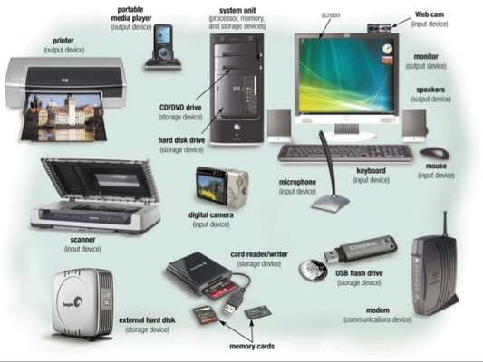

Un periferic este o unitate (aparat) de hardware ce este inclus sau se adaugă unui sistem de calcul pentru a-i extinde funcționalitatea. Denumirea de periferic este aplicată de obicei acelor unități componente care pot fi opționale prin natura lor.


-
- Tastatura : este o componentă hardware periferică a calculatorului ce permite utilizatorului să introducă în unitatea centrală a acestuia date (litere, cifre și semne speciale) prin apăsarea unor taste. Cele mai folosite tastaturi pe plan mondial sunt cele de tip QWERTY. Un alt tip de tastaturi este tipul QWERTZ.
- Scanner : În domeniul computerelor, un scaner este un aparat care scanează optic imagini analogice, texte tipărite sau chiar și obiecte reale și produce ca rezultat o imagine digitală în 2D.
- Mouse : este unul dintre cele mai importante dispozitive periferice de introdus comenzi ale computerului (calculatorului electronic) modern. A devenit aproape un "element" hardware standard al oricărui computer.
- Cameră web : este o cameră video ce captează, digitizează și transmite imaginile în timp real către un calculator sau o rețea de calculatoare.
- Microfon : este un aparat (transductor) care transformă sunetul în semnale electrice. Acesta are multe aplicații, fiind folosit de obicei în radioteleviziune și în telecomunicații, dar și în industria muzicală.
Unități periferice de intrare:
-
- Monitor : este un dispozitiv periferic de ieșire pentru afișare grafică luminoasă de date și imagini, folosit uzual în instalații de telecomunicație și în tehnica prelucrării datelor.
- Imprimantă : face parte din categoria dispozitivelor periferice de ieșire, aceasta fiind utilizată pentru transpunerea informației din calculator pe hârtie (un document, o poză sau orice altfel de fișiere grafice, un e-mail, un articol etc.).
- Boxă audio : este un dispozitiv de ieșire cu un echipament care se poate conecta la dispozitive care pot reda conținut audio, cum ar fi calculatorul personal, CD-Playere sau telefoanele mobile. Ea poate fi activă (nu au nevoie de amplificator și pot fi conectate la orice dispozitiv care are ieșire pentru căști) sau pasivă. Boxele se găsesc în comerț în sisteme de 2.0,2.1, 4.1, 5.1 și 7.1.
- Căști audio : numite și căști auriculare sau și căști de audiție sunt dispozitive electrice pentru recepția și ascultarea sunetelor și muzicii.
Unități periferice de ieșire
-
- Ecran tactil : este un ecran LCD, peste care stă o componentă sensibilă la atingere, prin intermediul căreia se realizează digitalizarea.
- Memoria USB : e un dispozitiv de stocare care include memorie flash cu o interfață Universal Serial Bus (USB) integrată.
Periferice de intrare/ieșire